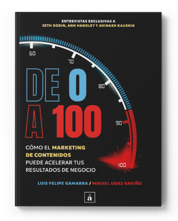

nosturm
conmodi furtim
nosturm
conmodi furtim
creando valor El buen contenido es el único camino para tener negocios sostenibles
La ruptura de los espacios físicos para promocionar y vender productos, la posibilidad de conectarnos para compartir intereses comunes, y la facilidad para construir nuestro propio contenido, obligan a las marcas a comprender a sus audiencias, escucharlas y convertirse, ellas mismas, en creadoras de comunicación que no solo genere buena reputación, sino que impacte a lo largo del buyer journey, creando negocios.
¿Cómo hacerlo? Las audiencias primero
Hace más de 20 años diseño campañas de comunicación y contenido. Algunas fueron exitosas, otras no tanto, y muchas murieron en el camino. La diferencia entre ellas no fue la cantidad de dinero invertido, ni la creatividad, ni un golpe de suerte. Lo que diferencia a las estrategias ganadoras es que se basan en pensar en las audiencias primero y poner sus dolores y necesidades por delante del producto, para crear luego un storytelling que resuene y movilice.
es el incremento en ganancias si diseñas una estrategia de contenidos enfocada en el valor de vida del cliente y no en el corto plazo.
Avinash Kaushik https://marketingdecontenidos.pe/avinash-kaushik/
de empresas aseguran que el content marketing incrementa la generación de leads.
Forbes Content Marketing Statistics for 2024
Los tres pasos de una estrategia de contenidos que genera resultados
Las audiencias son las reinas
¿quién necesita escuchar de mi? ¿Por qué lo haría? ¿Qué contenido puedo ofrecerle, más allá de mi producto o servicio?
Contenido de valor
Sí. Debe ser creativo, entretenido e impactante, pero sobre todo debe solucionar los dolores de las audiencias y darles información útil.
Distribución
Crear y optimizar nuestros propios canales para atraer a las audiencias, convertirlas en clientes y fidelizarlas.
colaboración ¿Qué podemos hacer juntos?
Enfocarnos en la tarea prioritaria de toda área de marketing y comunicaciones: diseñar e implementar estrategias de contenido que movilicen a nuestras audiencias.
libros y publicaciones Compartiendo conocimiento
Queremos que todos sepan qué puede hacer el buen contenido para que los negocios prosperen..Junto a Luis Felipe Gamarra he publicado dos libros: “De 0 a 100. Cómo el marketing de contenidos puede acelerar tus resultados de negocio”, en el que entrevistamos a gurús del marketing como Seth Godin, Avinash Kaushik y Ann Handley, así como a marketeros peruanos que ya aplican estrategias de contenido exitosas; y “Los Influencers”, que investiga qué hay detrás del éxito de 10 de los más importantes influencers peruanos.
Cómo hacer una estrategia desde 0
Compra aquí¿Qué hace exitoso a un influencer?
Compra aquí-

Cómo hacer una estrategia desde 0
Compra aquí -
¿Qué hace exitoso a un influencer?
Compra aquí
Compartiendo ideas Tengo algo que decir
20 años de carrera no pasan sin dejar algunas lecciones. En este espacio comparto contenido, ideas, reflexiones y alguno que otro consejo que podría ser útil.
But in certain circumstances and owing to the claims of duty or the obligations of business
But in certain circumstances and owing to the claims of duty or the obligations of business
But in certain circumstances and owing to the claims of duty or the obligations of business
Videos Entrevistas y conversaciones con gente interesante
Aquí podrás conocer, de primera mano, a los estrategas de comunicaciones y marketing que ya están haciendo la diferencia.
Melissa García - Pacífico Seguros: Contenido para la sostenibilidad en Pacífico
Melissa García - Pacífico Seguros: Contenido para la sostenibilidad en Pacífico
Melissa García - Pacífico Seguros: Contenido para la sostenibilidad en Pacífico
Melissa García - Pacífico Seguros: Contenido para la sostenibilidad en Pacífico
saying through Premios y reconocimientos
Alguna vez alguien pensó que lo que había hecho podría ser reconocido públicamente. Así que, venciendo el síndrome del impostor, estos son algunos premios que gané en mi carrera.

¿Te gustaría recibir contenido de valor? Suscríbete a nuestro newsletter
© 2024 Miguel Ugaz